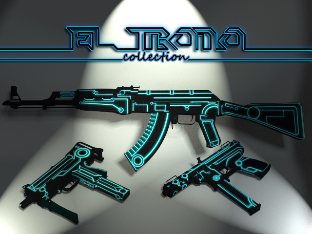

Welcome to my website! In this portfolio you can find some of my experience with programs such as Photoshop, Illustrator, 3DSMax, and Front End Web Developer experience build though the time. All the images and files have been created by me as part of different projects, both professional and personal projects, in which you can see the skills acquired through the years
